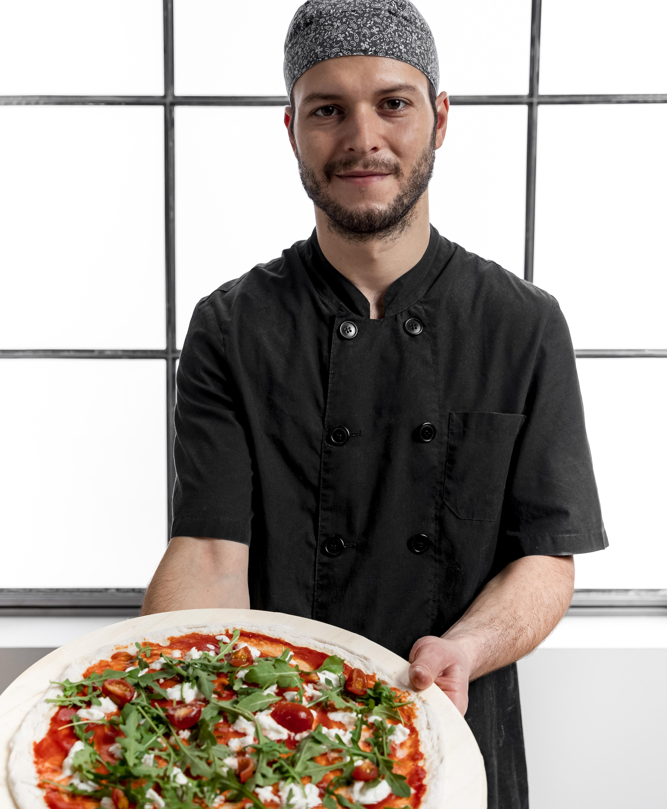

About The Saucy Slice
Welcome to The Saucy Slice!
We're a family-owned casual Italian restaurant that specializes in handcrafted pizza made with only the freshest ingredients. Our dough is made from scratch daily, and our sauces are simmered to perfection, ensuring that each slice is bursting with flavor.
At The Saucy Slice, we believe that good food is meant to be shared. That's why we've created a warm and inviting atmosphere where friends and family can come together to enjoy a delicious meal. Whether you're celebrating a special occasion or just grabbing a quick bite, we hope you'll make The Saucy Slice your go-to spot for casual Italian dining.
Thank you for choosing The Saucy Slice. We look forward to serving you!

We're a family-owned casual Italian restaurant that specializes in handcrafted pizza made with only the freshest ingredients. Our dough is made from scratch daily, and our sauces are simmered to perfection, ensuring that each slice is bursting with flavor.
At The Saucy Slice, we believe that good food is meant to be shared. That's why we've created a warm and inviting atmosphere where friends and family can come together to enjoy a delicious meal. Whether you're celebrating a special occasion or just grabbing a quick bite, we hope you'll make The Saucy Slice your go-to spot for casual Italian dining.
Thank you for choosing The Saucy Slice. We look forward to serving you!